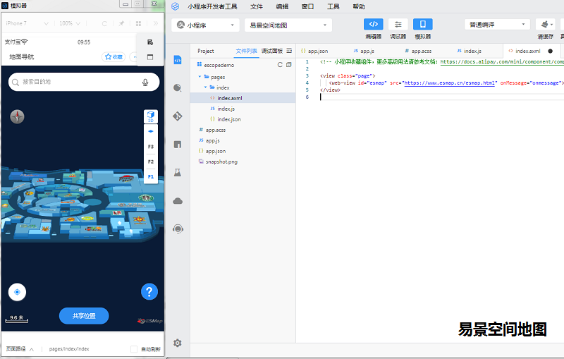
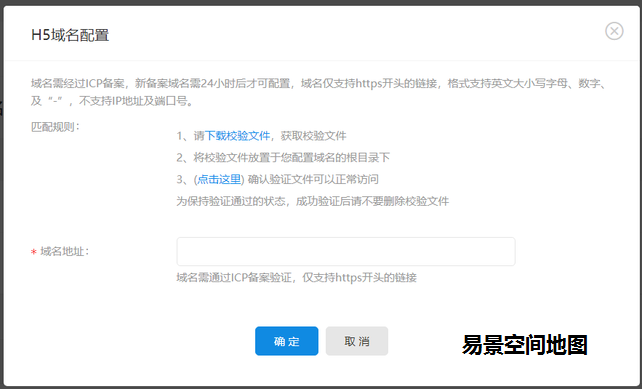
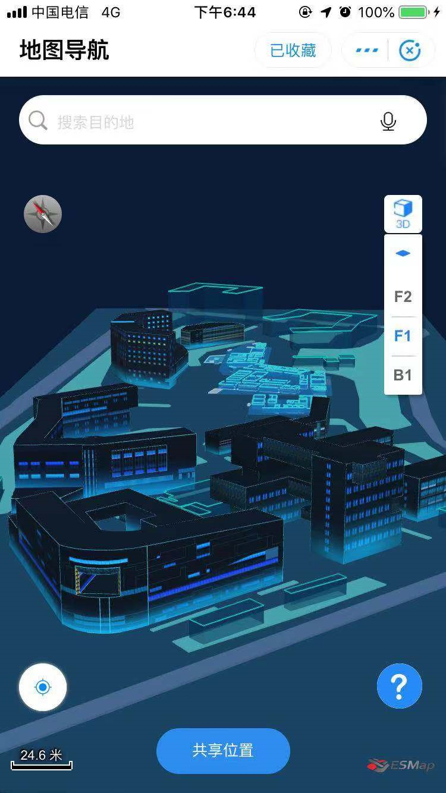
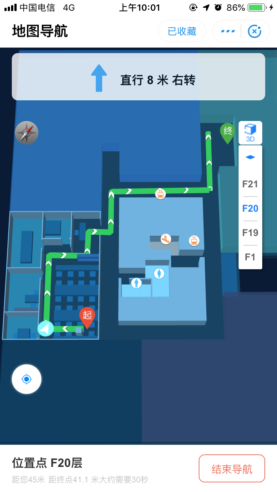

调用ESMap室内地图需要用到小程序web-view组件，想要通过 web-view 调用ESMap室内地图需要满足以下 2 个条件：
1. 小程序是企业主体，支付宝 web-view 组件不对个人类型的小程序开放。
2. 您需要有一个自己的域名，在嵌入网页的时候需要在支付宝后台验证域名（只有自己域名下的网页才能被正确地显示哦，不能随便找一个公开链接）。
支付宝小程序管理中心 > 设置 > 开发设置 > H5域名配置 里设置（如下图）

1、域名验证：
由于支付宝平台的规定，web-view 指向的地址，必须是在支付宝小程序后台登记的域名，否则无法使用。
首先我们找到支付宝小程序管理中心 > 设置 > 开发设置 > H5域名配置，并填上你需要绑定的域名。

需要注意的是，这里的域名强制 https，需要配置好 https 证书，购买服务器的时候也要注意购买支持 https 的服务器。
接下来，我们需要下载一个支付宝的验证文件，放在你域名的根目录下，并且支持访问。
具体来说，如果您的域名www.esmap.cn，支付宝的验证文件是WATLNxupm4.txt，您需要确保https://www.esmap.cn/WATLNxupm4.txt 可以公开访问。确认无误之后，点击保存即可成功保存。
注：小程序所有用到的https请求都需要配置合法域名
2、嵌入带有室内地图的web-view
这个过程其实很简单，找到你支付宝小程序的.wxml文件，添加以下代码
<web-view src="https://www.esmap.cn /esmap.html"/>
其中 https://www.esmap.cn /esmap.html 是带有地图的 H5 页面
室内地图制作流程，您可以使用下面两种方式构建这个页面：
1) 从https://www.esmap.cn 官网中复制测试地图源码DEMO，在您自己的服务器进行免费部署。
2) 参考https://www.esmap.cn 室内三维地图SDK开发说明，在您已有的 H5 页面上添加自己制作的室内地图。
支付宝小程序的 web-view 只能是全屏的，并且会覆盖页面中的所有其他组件。
1) 支付宝小程序给网页传递信息方法
this.webViewContext = my.createWebViewContext('web-view-1');
this.webViewContext.postMessage({'sendToWebView': '1'});
2) 如果网页想给支付宝小程序传递信息，可以通过 my.postMessage({'sendToMiniProgram': '0'}); 方法。

更多室内三维地图引擎例子功能体验